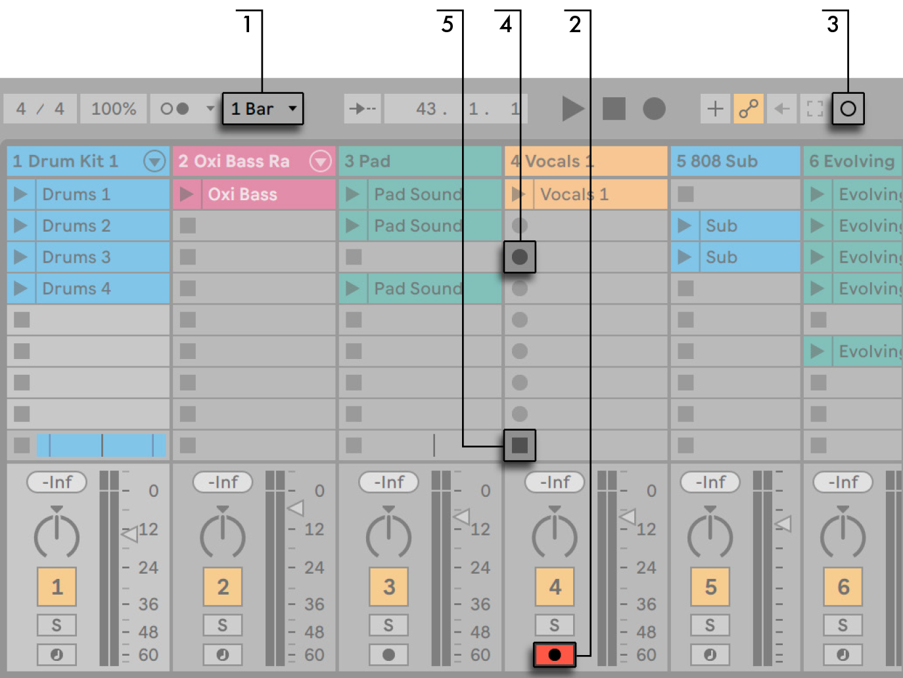
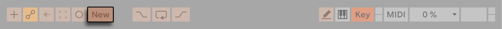
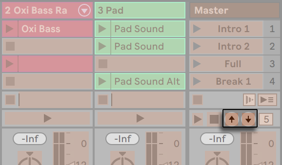
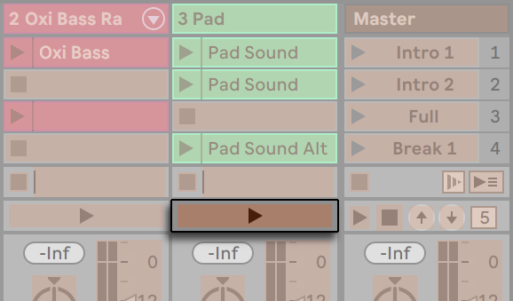

19. Recording New Clips
This chapter is about recording new clips from audio and MIDI input signals. Note that this is a different kind of recording than the capturing of Session clips into the Arrangement.
For successful audio recording, please make sure the audio settings are set up properly. Also, keep in mind that devices such as microphones, guitars and turntables do not operate at line level, meaning that they will need to have their levels boosted before they can be recorded. For these devices, you must therefore use either an audio interface with a preamp, or an external preamp.
On MIDI tracks, it is possible to “capture” played material after you’ve played it, without the need to press the Record button beforehand. This allows for more freedom and flexibility when you want to improvise or experiment. For more information, please refer to the Capturing MIDI section.
19.1 Choosing an Input
A track will record whatever input source is shown in its In/Out section, which appears when the View menu’s In/Out option is checked. In the Arrangement View, unfold and resize the track in order to completely see the In/Out section.

Audio tracks default to recording a mono signal from external input 1 or 2. MIDI tracks default to recording all MIDI that is coming in through the active external input devices. The computer keyboard can be activated as a pseudo-MIDI input device, allowing you to record MIDI even if no MIDI controller hardware is currently available.
For every track, you can choose an input source other than the default: any mono or stereo external input, a specific MIDI channel from a specific MIDI-in device or a signal coming from another track. The Routing and I/O chapter describes these options in detail.
19.2 Arming (Record-Enabling) Tracks

To select a track for recording, click on its Arm button. It doesn’t matter if you click a track’s Arm button in the Session View or in the Arrangement View, since the two share the same set of tracks.
By default, armed tracks are monitored, meaning that their input is passed through their device chain and to the output, so that you can listen to what is being recorded. This behavior is called “auto-monitoring“ and you can change it to fit your needs.
If you are using a natively supported control surface, arming a MIDI track will automatically lock this control surface to the instrument in the track.
Clicking one track’s Arm button unarms all other tracks unless the Ctrl (Win) / Cmd (Mac) modifier is held. If multiple tracks are selected, clicking one of their Arm buttons will arm the other tracks as well. Arming a track selects the track so you can readily access its devices in the Device View.
19.3 Recording
Recording can be done in both the Session and the Arrangement Views. If you want to record onto more than one track simultaneously and/or prefer viewing the recording linearly and in-progress, the Arrangement View may be the better choice. If you want to break your recording seamlessly into multiple clips or record while you are also launching clips in Live, use the Session View.
19.3.1 Recording Into the Arrangement

- Pressing the Control Bar’s Arrangement Record button starts recording. The specific behavior depends on the state of the “Start Playback with Record” button in the Record, Warp & Launch Settings. When enabled, recording starts as soon as the button is pressed. When disabled, recording will not start until the Play button is pressed or Session clips are launched. Regardless of the state of this preference, holding Shift while pressing Arrangement Record will engage the opposite behavior.
- Recording creates new clips in all tracks that have their Arm button on.
- When MIDI Arrangement Overdub is enabled, new MIDI clips contain a mix of the signal already in the track and the new input signal. Note that overdubbing only applies to MIDI tracks.
- To prevent recording prior to a punch-in point, activate the Punch-In switch. This is useful for protecting the parts of a track that you do not want to record over and allows you to set up a pre-roll or “warm-up“ time. The punch-in point is identical to the Arrangement Loop’s start position.
- Likewise, to prevent recording after the punch-out point, activate the Punch-Out switch. The punch-out point is identical to the Arrangement Loop’s end position.
- When you are recording into the Arrangement Loop, Live retains the audio recorded during each pass.
You can later “unroll“ a loop recording, either by repeatedly using the Edit menu’s Undo command or graphically in the Clip View: After loop recording, double-click on the new clip. In the Clip View’s Sample Editor, you can see a long sample containing all audio recorded during the loop-recording process. The Clip View’s loop brace defines the audio taken in the last pass; moving the markers left lets you audition the audio from previous passes.
19.3.2 Recording Into Session Slots
You can record new clips, on the fly, into any Session slots.

- Set the Global Quantization chooser to any value other than “None“ to obtain correctly cut clips.
- Activate the Arm button for the tracks onto which you want to record. Clip Record buttons will appear in the empty slots of the armed tracks.
- Click the Session Record button to record into the selected scene in all armed tracks. A new clip will appear in each clip slot, with a red Clip Launch button that shows it is currently recording. To go from recording immediately into loop playback, press the Session Record button again.
- Alternatively, you can click on any of the Clip Record buttons to record into that slot. To go from recording immediately into loop playback, press the clip’s Launch button.
- To stop a clip entirely, press its Clip Stop button or the Stop button in the Control Bar.
It is possible to stop playback and prepare for a new “take” with the New button. The New button stops clips in all armed tracks and selects a scene where new clips can be recorded, creating a new scene if necessary. Note that the New button is only available in Key Map Mode and MIDI Map Mode. Detailed steps for creating keyboard assignments are available in the Computer Keyboard Remote Control section. Please refer to the MIDI and Key Remote Control chapter for more information about MIDI assignments.

Note that, by default, launching a Session View scene will not activate recording in empty record-enabled slots belonging to that scene. However, you can use the Start Recording on Scene Launch option from the Record, Warp & Launch Settings to tell Live that you do want empty scene slots to record under these circumstances.
19.3.3 Overdub Recording MIDI Patterns
Live makes pattern-oriented recording of drums and the like quite easy. Using Live’s Impulse instrument and the following technique, you can successively build up drum patterns while listening to the result. Or, using an instrument such as Simpler, which allows for chromatic playing, you can build up melodies or harmonies, note by note.
- Set the Global Quantization chooser to one bar.
- To automatically quantize the notes you are about to record, choose an appropriate value for Record Quantization.
- Double-click any of the Session View slots in the desired MIDI track (the one containing the Impulse or other instrument). A new, empty clip will appear in the slot. The new clip will default to a loop length of one bar, but you can change that by double-clicking the clip and changing its loop properties.
- Arm the track.
- Press the Session Record button.
- The notes you play are added into the looping clip, and you can observe your recording in the Clip View.
- The clip overdubs as it loops, allowing you to build your pattern layer by layer. However, if you would like to pause recording for a moment to rehearse, you can deactivate overdubbing by pressing the Session Record button again. The contents of the clip will continue to play, but you can play along without being recorded. When you are ready to record again, press the Session Record button once again. Subsequent presses of the Session Record button will toggle between playback and overdub.
Note that holding Alt (Win) / Option (Mac) while double-clicking the empty slot to create a new clip will implicitly arm the track and launch the clip.
At any time while overdub recording is going on, you can use the Undo command to remove the last take, or even draw, move or delete notes in the Clip View’s MIDI Note Editor.
19.3.4 MIDI Step Recording
The MIDI Editor allows you to record notes with the transport stopped by holding down keys on your controller or computer MIDI keyboard and advancing the insert marker according to the grid settings. This process, known as step recording, allows you to enter notes at your own pace, without needing to listen to a metronome or guide track.

- Arm the MIDI track that contains the clip into which you want to record.
- Enable the Preview switch in the clip’s MIDI Editor.
- Click in the MIDI Editor to place the insert marker at the position where you want to begin recording.
Pressing the right arrow key on your computer keyboard will move the insert marker to the right, according to the grid settings. Any notes that are held down as you press the right arrow key will be added to the clip. If you continue holding notes as you press the right arrow key again, you will extend their duration. To delete notes that you’ve just recorded, keep them depressed and press the left arrow key.
The step recording navigators can also be MIDI mapped.
19.4 Recording in Sync
Live keeps the audio and MIDI you have recorded in sync, even when you later decide on a different song tempo. In fact, Live allows you to change the tempo at any time before, after and even during recording. You could, for instance, cheat a bit by turning down the tempo to record a technically difficult part, and pull it up again afterwards.
It is important to record in sync to make sure everything will later play in sync.

The easiest way to record in sync is to play along with or to use the built-in metronome, which is activated via its Control Bar switch and will begin ticking when the Play button is pressed or a clip is launched.

To adjust the metronome volume, use the mixer’s Preview Volume knob. Further metronome settings can be adjusted via the pull-down menu next to the metronome switch.
Notice that Live’s metrical interpretation of the material in a clip can be edited, at any time, using Warp Markers. Warp Markers can be used to fix timing errors and to change the groove or feel of your audio or MIDI recordings. Using Warp Markers, you can fix things that would otherwise require complicated editing or could not be done at all.
19.4.1 Metronome Settings
You can access the Metronome Settings menu via the pull-down switch next to the metronome, or by opening the context menu for the metronome itself.
The menu lets you set the count-in length for recording. You can also change the sound of the metronome’s tick.
The Rhythm settings allow you to set the beat division at which the metronome ticks. With the default “Auto” setting, the tick interval follows the time signature’s denominator. Beat divisions that do not fit into one bar of the current time signature will appear disabled.
If the currently selected beat division no longer fits in a bar due to a time signature change, the metronome’s tick will revert to the “Auto” setting. However, if the time signature is changed in a way that makes the beat division fit in a bar again, the tick will revert to following the selected beat division.
When Enable Only While Recording is checked and the metronome is activated, the metronome will be highlighted while transport is running, but will only be audible while recording. If you are recording into the Arrangement while the Punch-In switch is active, the metronome will only be audible after the punch-in point.
19.5 Recording Quantized MIDI Notes
If you will be recording MIDI, you have the option of automatically quantizing MIDI notes while recording. The Record Quantization chooser in the Edit menu allows selecting the meter subdivisions with which your recorded notes will align. When recording into the Arrangement, record quantization is an independent step in Live’s Undo history. This means that if, for example, you recorded with Record Quantization set to “Eighth Note Triplet Quantization“ and then changed your mind, using the Edit menu’s Undo command would undo only the quantization and leave your recording otherwise intact.
For Session and Arrangement recording, the Record Quantization setting cannot be changed mid-recording.
When overdub recording with the Clip View Loop activated, changes to the Record Quantization take effect immediately, and they cannot be separately undone with the Edit menu command.
Recorded MIDI notes can also be quantized post-recording with the Edit menu’s Quantize command, as described in the chapter on editing MIDI.
19.6 Recording with Count-in
A count-in for recording can be set via the pull-down menu next to the Metronome switch. When set to any value other than “None,“ Live will not begin recording until the count-in is complete. The Arrangement Position fields in the Control Bar display the count-in in blue as bars-beats-sixteenths.

The count-in runs from negative bars-beats-sixteenths (beginning at -2.1.1., for example, with a Count-In setting of 2 bars) up to 1.1.1., at which point recording commences.
19.7 Setting up File Types
The following Settings from the Record, Warp & Launch tab are relevant to the sample files that are created by recording:
- The sample file type you would like Live to create can be chosen from the File Type chooser in the Record, Warp & Launch Settings.
- The bit depth of the sample file you will create by recording can be chosen from the Bit Depth chooser in the Record, Warp & Launch Settings.
You can save time by setting up reasonable defaults for the clips you are recording in the Record, Warp & Launch Settings tab. In particular, it is smart to indicate the rough category of sound to be recorded by choosing the appropriate default Warp Mode. If you decide later on a different song tempo, the program will automatically maintain good sound quality, usually without further adjustment.
19.8 Where are the Recorded Samples?
Recorded samples are stored with the current Set’s Project folder, under Samples/Recorded. Until the Set is saved, it remains at the location specified by the Temporary Folder preference which is found in the Settings’ File/Folder tab. To make sure Live will not run out of disk space while recording into a new Set, please make sure the Temporary Folder is on a drive/partition with sufficient free space.
19.9 Using Remote Control for Recording
Using Key Map Mode and MIDI Map Mode, you can operate Live’s recording functions without using the mouse.
You can map the Control Bar’s Arrangement Record and transport controls as well as the track Arm buttons. For recording into the Session slots, you can map the Session Record and New buttons, the individual slots, and the relative navigation controls to initiate recording remotely; for instance:

One key is used to jump to the next scene…

… and another key to start and end recording in the respective track.
You can also map the step recording navigators.

This allows you to, for example, use MIDI foot pedals to move the clip’s insert marker, thereby keeping both hands free for playing a keyboard.
19.10 Capturing MIDI
Live is always listening to MIDI input on armed or input-monitored tracks, and Capture MIDI lets you retrieve the material you’ve just played on those tracks. This is particularly useful if you forgot to press the Record button before playing, or if you prefer to improvise or experiment freely without the stress of recording.

To capture the MIDI notes you just played, press the Capture MIDI button.
On Push 1 or Push 2, you can trigger Capture MIDI by holding the Record button and pressing the New button. On Push 3, you can use the dedicated Capture button.
Capture MIDI behaves differently depending on the state of the Live Set. We will look at these different behaviors below.
19.10.1 Starting a New Live Set
If the Live Set contains no other clips and the transport is stopped:
- A new clip containing the phrase you played will be created on every monitored MIDI track. Note that Capture MIDI will only add clips to the Session or Arrangement View, depending on which View is currently in focus.
- Capture MIDI will detect and adjust the song tempo, set appropriate loop boundaries and place the played notes on the grid. Note that Capture MIDI’s tempo detection will set the tempo in the 80-160 BPM range. If you consider the played material to be at a tempo outside this range, you can adjust the song tempo to your liking. To help Capture MIDI detect a phrase correctly, it is recommended to end playing on the first beat (or “downbeat”) of the next bar.
- Live’s transport will immediately begin to run, and play back the captured loop. This allows you to create overdubs if you wish (for more information about overdubbing with Capture MIDI, refer to the section Adding Material to an Existing Live Set below).
- All of your played material will be saved in the clip, and any notes that you played before the detected phrase will appear prior to the clip start marker. This enables you to adjust the start/end or loop markers to set a different loop. To discard unwanted material outside the set loop, simply right-click on the clip and select the Crop Clip command.
Note: If only one note is played in the first captured MIDI clip, the loop boundaries are set to the note start and end, and the tempo is accordingly calculated, resulting in a one, two, four, or eight bar loop. This is particularly useful when playing a rhythmical sample with a single MIDI note.
19.10.2 Adding Material to an Existing Live Set
If Live’s transport is running, there are already other clips in the Live Set, or the tempo is automated:
- Capture MIDI will not detect or adjust the song tempo. Instead, Capture MIDI will use the existing tempo to detect a meaningful musical phrase from your played material and create a loop.
- While the transport is running, you can “play along” with other clips. You can also use Capture MIDI to “overdub” a playing clip, by playing over it on the same track. Pressing the Capture MIDI button will add the material you just played on top of the existing clip’s content, allowing you to build your pattern layer by layer.
- All of your played material will be saved in the clip, and any notes that you played before the detected phrase will appear prior to the clip start marker. This allows you to adjust the start/end or loop markers to set a different loop.